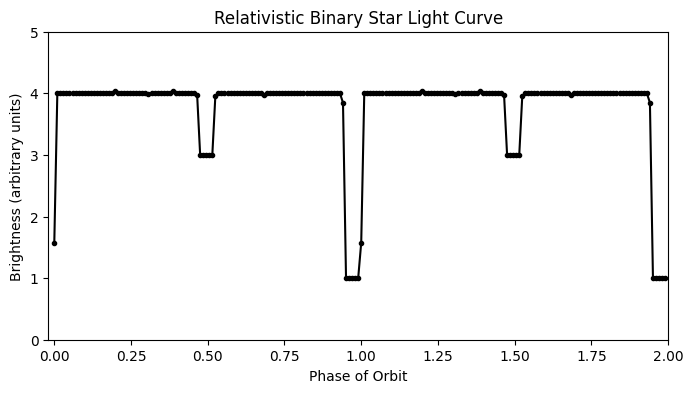

Chapter 1: Roots of Relativity#
Before we dive into the set of predictions and interpretations that make up what we call “Special Relativity” (or SR), it’s important to lay some groundwork and establish the definitions for what we will be talking about. Much of SR will twist and challenge what you thought you knew about space and time, so it is important to define our terms carefully and precisely, or else it can get very confusing as to what we are actually talking about. In the first two chapters, we will describe the rules by which the game of SR is played, and describe some of the reasons why those rules have been accepted. It’s important to know, right from the beginning, that the predictions of relativity, in both the general and specific forms, have passed every single test to which they have been subjected. As far as we can tell, the universe really does work this way.
After a few notes about the electronic format of this book, the rest of this chapter will present the experimental evidence that convinced the scientific world to take Einstein’s proposals seriously. Chapter two will lay out the remarkably few premises that are needed to develop all the challenging interpretations of space, time, and motion that we think of as “relativity”.
A Few Notes about this eBook#
This electronic book is an adaptation and expansion by Don Smith of a printed text written by Rex Adelberger before he passed. By casting the book in this electronic format, it is possible to create animated and interactive graphical representations of concepts that were only static images in the original text. These interactive graphs have been produced using the VPython library on the WebVPython web site. As with all VPython visualizations, you can zoom, pan, and rotate the animation however you like, using the tools of your particular device’s interface (be it a smartphone, tablet, or trackpad). Interactive elements such as buttons and sliders are explained in the caption for each such figure. Most static graphs are created by Python code embedded in the book, rather than imported as images created by separate analysis software.
This book is aimed at an audience of students that have completed at least a year of introductory Physics and are comfortable with the mathematics of calculus as well as vector and matrix manipulation. I will assume the reader is familiar with the relationships between displacement, velocity, acceleration, momentum, and force, as defined in classical Physics, as well as the classical properties of electric and magnetic fields. The Pythagorean Theorem is ubiquitous, although the reader will see that it works a little differently when time is incorporated as a fourth dimension.
Experimental Foundation#
Before the 1900s, a popular theory about the propagation of light waves was that they traveled in some medium called the “ether”. The ‘ether’ plays the analogous role that the air plays in the propagation of sound. The physical properties of the air determine the speed of the sound waves. In the case of the ‘ether’, it supported a speed of propagation of \(3.0 \times 10^8\) m/s. Following the usual practices of physics, the validity of this theory would be determined by experiments. As a test of this theory, in 1881, Michelson did an experiment to measure the relative velocity of the ether with respect to the earth. The ‘best’ ether theory of the time suggested that the ether was at rest with respect to the fixed stars. The earth orbits the sun once a year at an orbital speed of about \(3.0 \times 10^4\) m/s. If a light beam on earth travels in the same direction as the orbital motion about the sun, then that beam of light is in a frame of reference that is moving at \(3.0 \times 10^4\) m/s with respect to the speed of the ether. If the beam of light is heading towards the sun, it is moving in a frame of reference that is at respect to the ether.
Michelson designed an interferometer (schematically shown in Fig. 1) that used partially silvered mirrors to split a beam of light into two legs that were at right angles to each other. By careful examination of the interference of the light after it traveled along the two beam lines and was recombined by the partially silvered mirrors, he could measure a difference in speed of light in the two arms of about 300 m/s, much smaller than the orbital speed of the earth about the sun. The interferometer was floated on a pot of mercury and allowed to rotate slowly. During a rotation of 360 degrees, at one time one of the legs would be pointing in the direction of motion of the earth (moving with respect to the ether) and the other at rest with respect to the ether. A quarter of a turn later, the light in the arm that was at rest with respect to the ether would be moving and vice versa. This anticipated change in the speed of light when the either was at rest with respect to the mirrors or moving with respect to the mirrors in the other arm could be detected in the changing of the interference pattern of the combined beams.
Much to Michelson’s surprise, he measured no difference in speed as the arm was at rest with respect to the ether or moving with respect to the ether. Michelson had this terse description of the experiment: “The interpretation of these results is that there is no displacement of the interference bands. … The result of the hypothesis of a stationary ether is thus shown to be incorrect.” (A. A. Michelson, Am. J. Sci, 122, 120 (1881)). Michelson was encouraged by some important English physicists to continue his research. Along with E.W. Morley, he built a much bigger interferometer that had multiple mirrors and was 10 times as sensitive to the relative motion. He could measure a relative velocity of 30 m/s. Again, they found no difference in the speed in the two arms. (A. A. Michelson and E. W. Morley, Am. J. Sci., 134, 333 (1887)). The experiment was repeated often over the next few years, at even greater precision, but always gave the same null result: there is no stationary ether. As a consequence of his careful and brilliant work about the nature of the propagation of light, Michelson was awarded the Nobel prize in 1907.
As with most interesting experiments, Michelson got a result that did not agree with his intuition about the outcome of the experiment. After a number of very bright physicists examined these results, a relatively simple and rather clever model was developed that agreed with the experimental results.
Fig. 1 Animation of a simplified schematic of a Michaelson interferometer. A laser, represented by the red cylinder to the left, shines a beam to the right. The light is split by a diagonal half-silvered mirror. Half the beam continues to the right, while half the beam goes up. Each of these half-beams is reflected from a flat mirror back along the incoming path. In the animation, the reflected beam is shifted slightly toward the viewer – rotate the image to see the difference clearly. The reflected beams then recombine at the splitter, resulting in an outgoing downward beam that is the sum of the two beams. The animation begins in a world with no ether. If you click on the checkbox below the animation, you can turn on an ether, and the slider will rotate the direction of the relative motion between the ether and the apparatus. Waves going with the ether are stretched out, while waves heading upstream are squished. By rotating the direction, you can see that the outgoing beam varies dramatically based on the angle. No such dependence was ever observed.#
Example of Binary Star Systems#
Another piece of evidence for the constancy of the speed of light comes from observations of binary star systems. If two stars, orbiting each other, lie in a plane that is shared with the Earth, then we will observe eclipses every half orbit, as one star blocks at least some of the light from the other. Half of each orbit, one star is moving toward the Earth, and the other is moving away.
If the speed of light depended on the relative speed of the emitter and/or the receiver, the light from the star approaching the Earth would be moving faster than the light from the receeding star. Over the years of travel between the stars and the Earth, the faster light would catch up to the slower light, perhaps even overtaking it. The observations of the moments in the orbit, such as one star passing in front of the other, would arrive at the Earth at completely distorted times. A simulation of such a distortion is shown in Fig. 2.
Of course, no such distortion has ever been observed. Eclipses arrive like clockwork. Arrival times of the eclipses’ beginnings and endings might need to be corrected for the Earth’s motion around the Sun (light will take up to sixteen minutes longer to arrive at the Earth when it is on the far side of the Sun from the star), but there is no evidence that some of the light from the stars is getting here faster than other light.
{kind=link}
{kind=link}
Fig. 2 Simulation of a simplified binary star system light curve. One star is three times as bright as the other. This light curve shows two cycles of the stars’ orbit as seen from Earth, 100 light years away. The deeper eclipse is when the brighter star’s light is blocked by the dimmer star. The upper figure uses a constant speed of light for all photons, while the lower figure shows what such a light curve might look like if the light from the approaching star moved faster than the light from the receeding star (the speed of the stars has been exaggerated to accentuate the effect). The upper figure matches what binary stars actually look like. See, e.g. this example of HIP 59683, a star in the Hipparcos database or this collection of light curves from the AAVSO.#
Once you accept the idea that the speed of light is the same for all observers, many counter-intuitive results follow, but all of them have been verified in the real world.